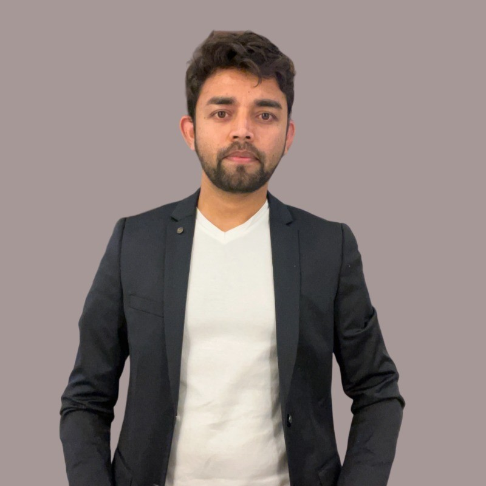

I'm Aditya Dubey — an AI Engineer and Data Engineer who designs GenAI pipelines, agentic workflows, and cloud-native data platforms that scale. Founder of mygol.ai.

I'm an AI Engineer and Cloud-Native Systems Architect with a strong foundation in data engineering. I currently build mygol.ai, an AI-powered platform that automates the job application process end-to-end — from resume tailoring to application submission — using GenAI pipelines, retrieval-augmented generation, and agentic workflows with production-grade guardrails.
Before founding mygol.ai, I spent over four years as a Data Engineer at Viant Technology, where I architected large-scale data platforms on BigQuery and Snowflake, built real-time Kafka streaming pipelines, and helped the company realize over $100,000 per month in cloud cost savings.
I hold an MS in Data Analytics from the Illinois Institute of Technology (GPA 3.9) and I'm a Google Cloud Certified Professional Cloud Architect. I care about shipping reliable, well-architected systems — whether that's an LLM agent or a petabyte-scale data warehouse.
A GenAI-powered platform that automates the entire job-search workflow — resume tailoring, job matching, and application submission — through RAG and agentic pipelines with built-in reliability guardrails. Founded and built solo, end to end.
A big-data pipeline using PySpark, Flask, MongoDB, and Bokeh to process and visualize seismic data for earthquake prediction.
Real-time stock market data streaming and processing pipeline built with Apache Kafka for low-latency analytics.
Interactive dashboards analyzing global COVID-19 trends, built for exploratory data analysis and public health insight.
Time-series forecasting model predicting daily retail sales across Rossmann store locations using machine learning.
Machine learning classifier for detecting fraudulent credit card transactions on highly imbalanced data.
Open to AI Engineer and Data Engineer opportunities. Reach out — I'd love to talk about GenAI systems, data platforms, or mygol.ai.